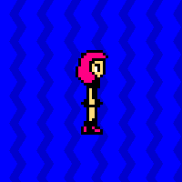

| . |
 |
 |
|
The panel on the left was created using just these two animated gifs.
The panel on the right is one image. If you've got dial-up access, it's probably still loading. Why? Because this giant gif takes approximately thirty times the bandwidth of its equivalent on the left. If the background were more colorful, it could be hundreds of times larger! (Say goodbye to your Geocities account...) Plus there's also the problem that it's impossible to have the "foreground" and "background" moving at different rates in one gif, so a slower background must be settled for in the example at right. (Well, technically it's possible, but it'd take at least twice as many frames, making the filesize even larger.) It's clear why the first is preferable, and here's the code for it.
<table border="0" cellspacing="10" cellpadding="0"><tr>
<td width="200" height="200" bgcolor="00ffff" valign="middle" background="scrollleft.gif"><center><img width="63" height="96" src="sheenawalk.gif"></center>
</td></tr></table>
Getting back to the story of how I created Kid Radd, I originally conceived of making a multi-panel comic strip that resembled most webcomics and print comics out there. You'd see all the panels at one time, and read them from left to right, hoping not to see a punchline ahead of time.
But as the Radd story began to formulate in my head, it became clear that an animated comic might not do so well in that type of format. Especially when your eyes want to jump right to the animated portion, often ruining a sight gag before you've seen the beginning of the joke.
But what really sealed it was the fact that certain animations needed to "begin." Not every animation could run in a continuous loop for the joke to work, some needed to start up when you first saw the panel. You could put in an animated gif that pauses for a few seconds before starting, but it was impossible to predict when a viewer would get to that particular panel. Some of the jokes I wanted to do were simply impossible in a standard comic strip format.
Fortunately, my younger brother Dave came up with a solution. I had shown him how to use tables to layer gifs like I've been explaining thus far, and he discovered a cool trick using them. He figured out that when you use internal links within a page, the browser jumps to its destination without actually scrolling. Thus, if you set up a series of pictures or text within identical borders, connected by internal links, you created the illusion of one interactive viewer. As you clicked on the links beneath the picture, the border seemed to stay in one place while the picture within changed.
Click here for an example:
| |
| | . | ... |